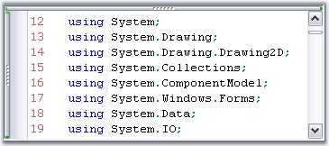
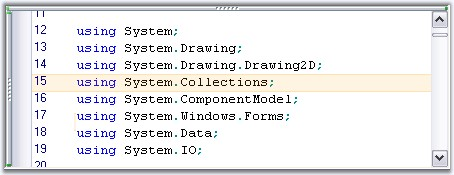

Line Numbers can be automatically assigned to the contents of the Edit Control by enabling its ShowLineNumbers property.
The number of lines in the Edit Control can be obtained by using the PhysicalLineCount property. This property returns the actual number of lines in the Edit Control, without considering the lines that maybe hidden because of a collapsed outlining block or new lines that maybe added because of wordwrap.
|
Edit Control Property |
Description |
|
ShowLineNumbers |
Gets / sets value indicating whether line numbers should be shown. |
|
PhysicalLineCount |
Gets the count of lines in the files. |
|
[C#]
// Assigning Line Numbers to the contents of the Edit Control. this.editControl1.ShowLineNumbers = true;
// Gets the number of lines in the Edit Control. int actualLineCount = this.editControl1.PhysicalLineCount; |
|
[VB.NET]
' Assigning Line Numbers to the contents of the Edit Control. Me.editControl1.ShowLineNumbers = True
' Gets the number of lines in the Edit Control. Dim actualLineCount As Integer = Me.editControl1.PhysicalLineCount |
Line numbers can be customized by using the below given Edit Control properties.
|
Edit Control Property |
Description |
|
LineNumbersAlignment |
Specifies the alignment of line numbers. The options provided are
Left Right |
|
LineNumbersColor |
Specifies the color of line numbers. |
|
LineNumbersFont |
Specifies the font of line numbers. |
|
SelectOnLineNumberClick |
Gets / sets value indicating whether click on line numbers performs selection. |
|
[C#]
// Specify the alignment of line numbers. this.editControl1.LineNumbersAlignment = Syncfusion.Windows.Forms.Edit.Enums.LineNumberAlignment.Right;
// Assign any color to the line numbers. this.editControl1.LineNumbersColor = Color.IndianRed;
// Assign any font to the line numbers. this.editControl1.LineNumbersFont = new Font("Verdana", 9);
// Enabling SelectOnLineNumberClick property to perform selection on clicking the line numbers. this.editControl1.SelectOnLineNumberClick = true; |
|
[VB.NET]
' Specify the alignment of line numbers. Me.editControl1.LineNumbersAlignment = Syncfusion.Windows.Forms.Edit.Enums.LineNumberAlignment.Right
' Assign any color to the line numbers. Me.editControl1.LineNumbersColor = Color.IndianRed
' Assign any font to the line numbers. Me.editControl1.LineNumbersFont = new Font("Verdana", 9)
' Enabling SelectOnLineNumberClick property to perform selection on clicking the line numbers. Me.editControl1.SelectOnLineNumberClick = True |

Figure 22: IndianRed Color Line Numbers with FontSize = "9", FontStyle = "Verdana"
Highlighting Current Line at Run Time
You can highlight the current line where the mouse pointer is present by setting the HighlightCurrentLine property of the Edit Control to True. Set the color for the highlighted line by using the CurrentLineHighlightColor property.
|
Edit Control Property |
Description |
|
HighlightCurrentLine |
Gets / sets value indicating whether current line should be highlighted. |
|
CurrentLineHighlightColor |
Gets / sets color of current line highlight. |
|
[C#]
this.editControl1.HighlightCurrentLine = true; this.editControl1.CurrentLineHighlightColor = Color.Orange; |
|
[VB.NET]
Me.editControl1.HighlightCurrentLine = true Me.editControl1.CurrentLineHighlightColor = Color.Orange |

Figure 23: CurrentLineHighlightColor = "Orange"
You can also highlight the selected text by using the Text Highlighting feature discussed in Background Settings.